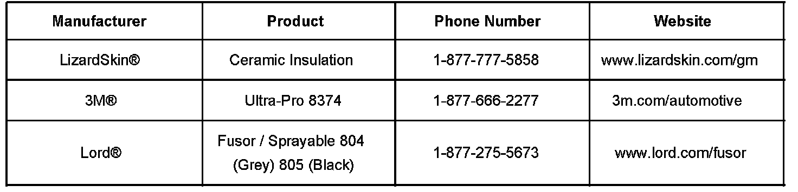

Body - Liquid Applied Sound Deadening Materials.
Bulletin No.: 07-08-51-001Date: March 01, 2007
INFORMATION
Subject:
Application Guidelines and Availability of Liquid Applied Sound Deadening (LASD) Materials
Models:
2008 Buick Enclave
2007 Cadillac Escalade Models
2007 Chevrolet Avalanche, Silverado, Suburban, Tahoe
2007 GMC Acadia, Sierra, Yukon, Yukon XL, Yukon Denali, Yukon Denali XL
2007 Saturn OUTLOOK
Liquid Sound Dampeners

The above vehicles have sound dampening materials applied during production. In some areas, these are sprayed-on products referred to as Liquid Applied Sound Dampeners (LASD). These materials must be replaced if repair work forces affected panel replacements. The chart outlines the current approved products that meet GM guidelines for sound deadening materials. Refer to the manufacturer's recommendations for proper application.

Disclaimer